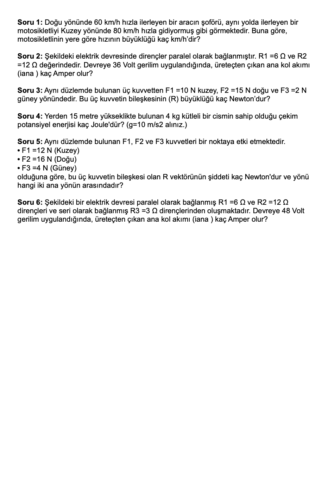
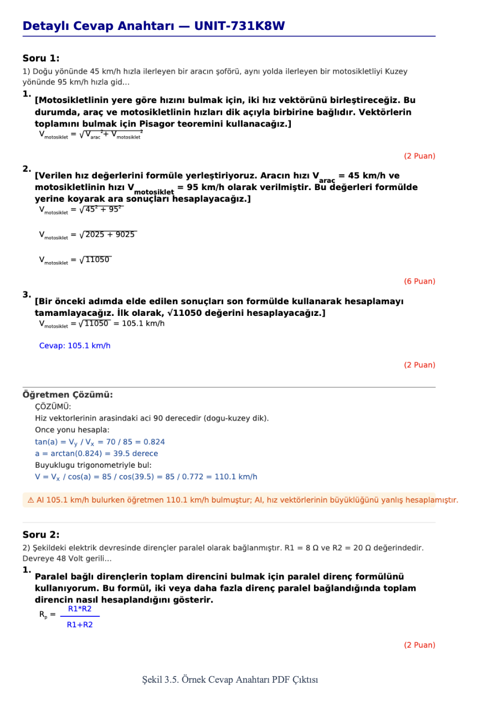

Projects
UniTest
A system that takes an exam paper an instructor uploads, detects the numeric values in each question, and uses AI to change those values while keeping the underlying logic intact. The goal is to generate a unique version of the exam for every student, making it fairer and cutting down on copying. Built with a teammate, and still actively growing.


